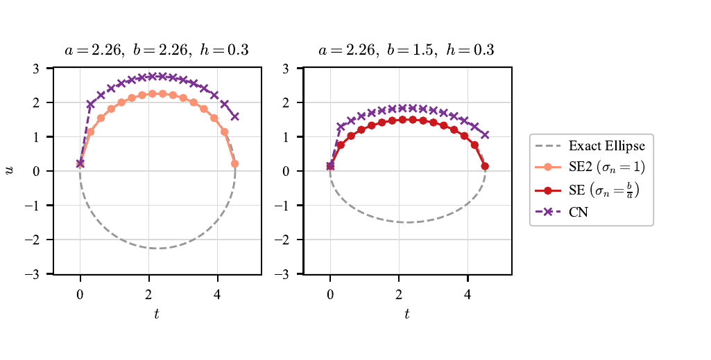
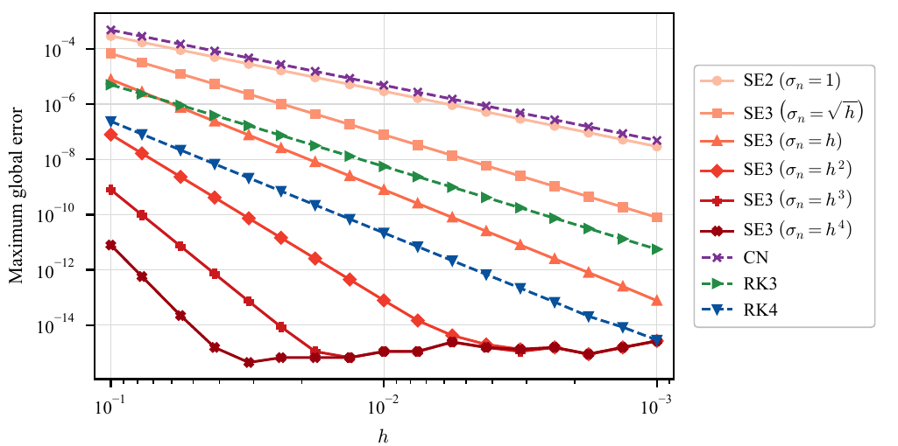
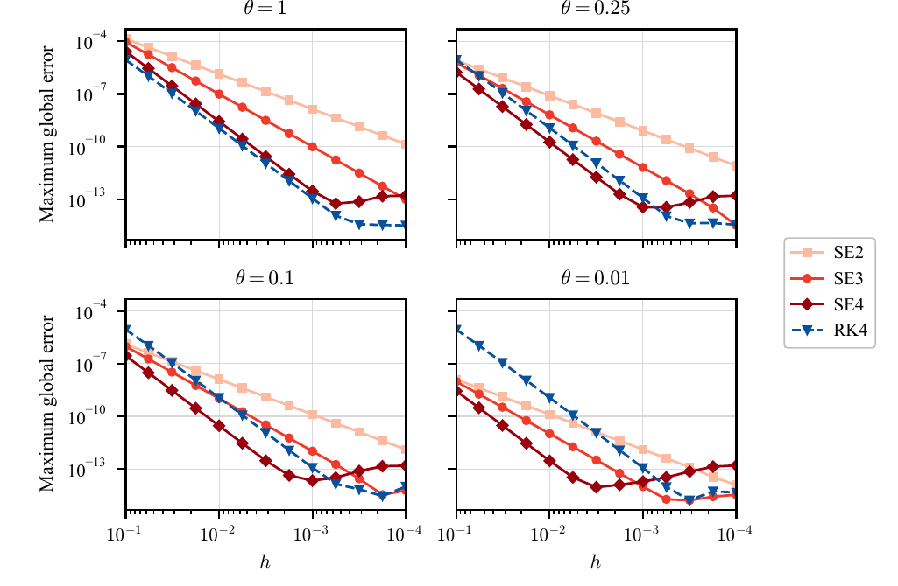
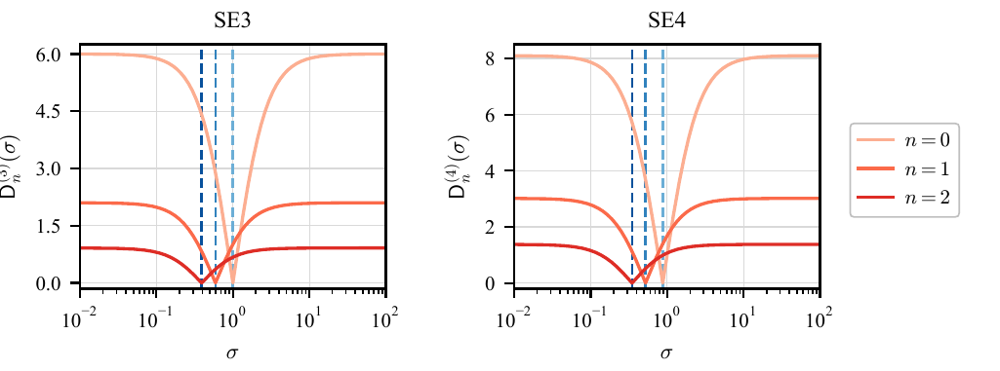
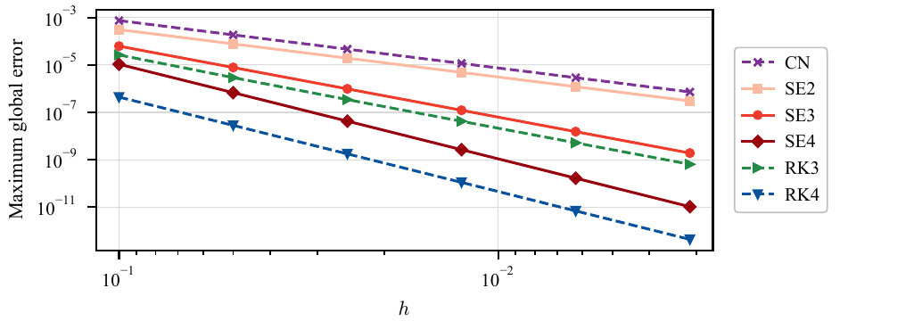
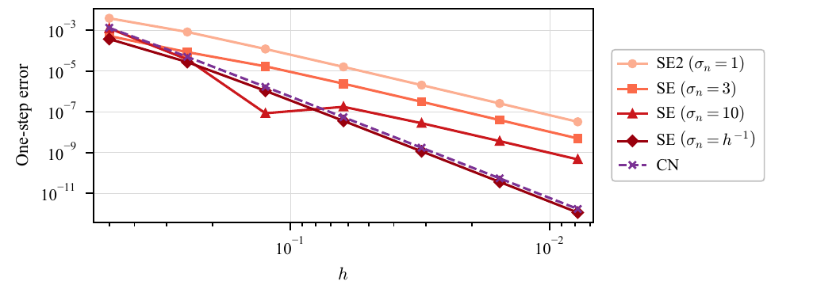

Scalar ODE examples
These six scripts reproduce the scalar ODE experiments discussed in the manuscript.
They use the public specular API and save their canonical PDF figures under examples/ode/figures/.
SE2, SE3, and SE4 on this page
These labels refer to second-, third-, and fourth-order configurations of the specular ellipse method.
SE2 uses sigma_n=1, SE3 uses a pointwise defect condition or a problem-specific vanishing-scale family, and strict SE4 uses the two-endpoint scale in E5a/E5b and sigma_n=1 otherwise.
This SE2 is ellipse_scheme(..., sigma_n=1), which equals euler_scheme_5; it is not euler_scheme_2.
The public API also provides minimize_defect=True. That separate mode
uses the full E1--E6 two-endpoint classification and may return a finite scale,
the 0.0 zero-scale sentinel, or the inf Crank--Nicolson sentinel.
It minimizes the classified defect but does not assert a maximal or
fourth-order convergence rate. See the
automatic scale-selection modes
for the API and validation rules.
Install the development dependencies, then run any script from the repository root:
pip install -e ".[dev]"
python examples/ode/ellipse_exactness.py
The order statements below are numerical observations for the stated problems. The ODE API warning summarizes the hypotheses required by the convergence results.
Exact tracing
For
the fitted scale is \(\sigma_n=b/a\). The two panels use \(p=2.25\), \(h=0.3\), and \((a,b)=(2.26,2.26)\) or \((2.26,1.5)\). The fitted SE trajectory reaches the exact ellipse at every mesh point, subject to the unique admissible implicit update assumed by the exactness result; CN does not.

Vanishing scales
For \(u'=u^{-1}\), \(u(0)=1\), on \([0,1]\), the script compares \(\sigma_n=1\) and \(\sigma_n=h^p\) with \(p\in\{1/2,1,2,3,4\}\), together with CN, RK3, and RK4. The higher orders visible for the vanishing scales follow a direct estimate for this particular equation; they are not general SE3 guarantees. At the smallest errors, roundoff and nonlinear-solver tolerances become visible.

Optimal scales for a normalized pendulum branch
The normalized positive-velocity phase equation is
The four panels compare SE2, the pointwise SE3 selector, the two-endpoint SE4 selector, and RK4 for \(\theta=1,0.25,0.1,0.01\). This is a normalized phase equation, not the original time-domain pendulum. The curves compare accuracy at the same step size, not at the same runtime or number of field evaluations.

Defect cancellation for quadratic decay
For \(u'=-u^2\), \(u(0)=1\), the two panels plot the absolute pointwise defect used by SE3 and the absolute two-endpoint defect used by SE4. The exact states at \(n=0,1,2\), with \(h=0.3\), are used so that the marked scales show the intended cancellation directly rather than accumulated global error.

Convergence for quadratic decay
For the same quadratic decay problem on \([0,1]\), the maximum global errors show the expected second-order behavior of CN and SE2, third-order behavior of SE3 and RK3, and fourth-order behavior of SE4 and RK4. Unlike the pendulum illustration, this problem supplies a clean instance of the uniform branch assumptions used by the fourth-order convergence theorem.

Diverging scales
For \(u'=1-u^2\), each \(h\) uses a separately selected exact endpoint pair from the large-scale boundary case. The figure compares fixed scales \(\sigma_n=1,3,10\), the diverging scale \(\sigma_n=h^{-1}\), and CN. It is a one-step experiment, not a global-convergence plot: the fixed scales exhibit third-order one-step error here, while \(h^{-1}\) and CN exhibit fifth-order one-step error.
